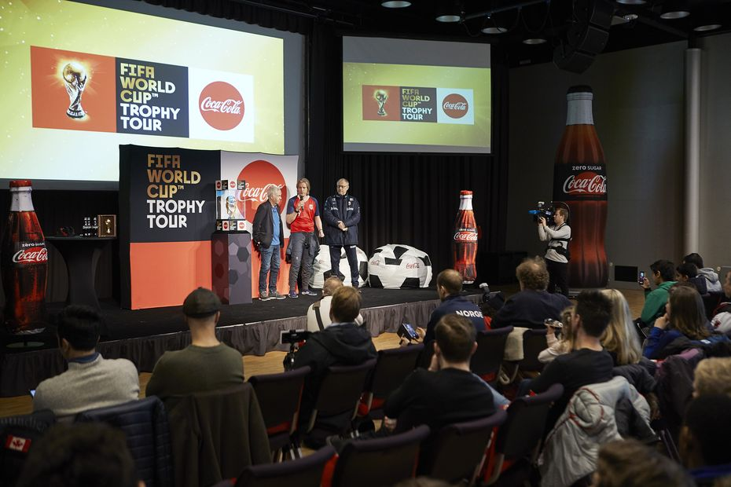
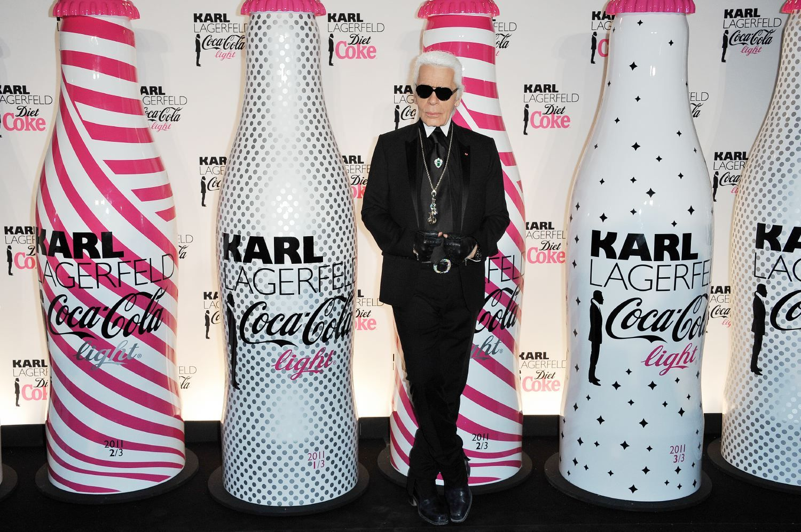
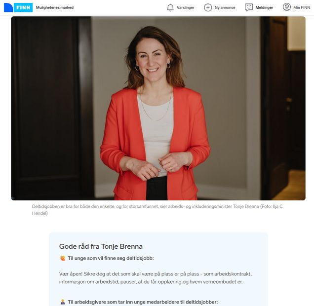
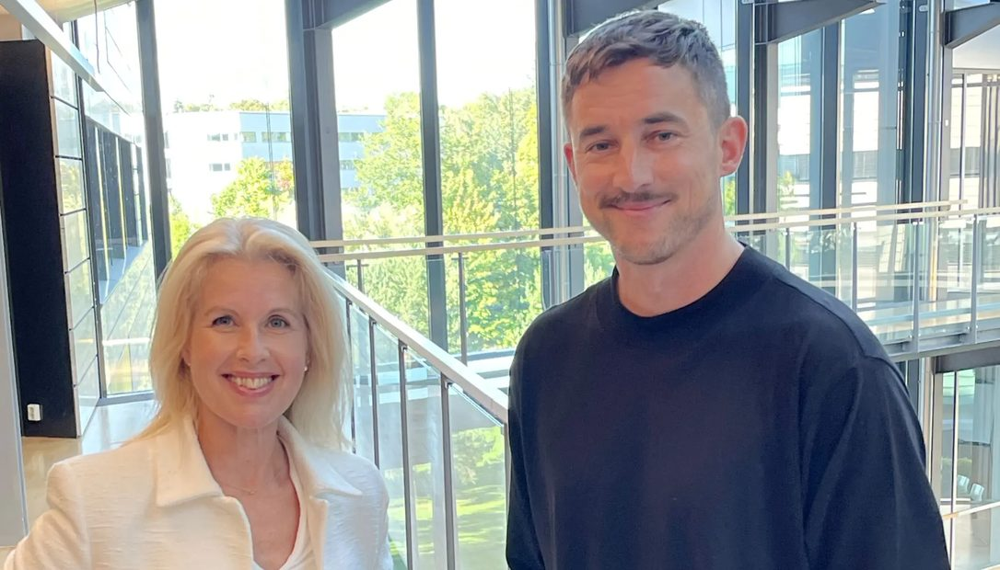
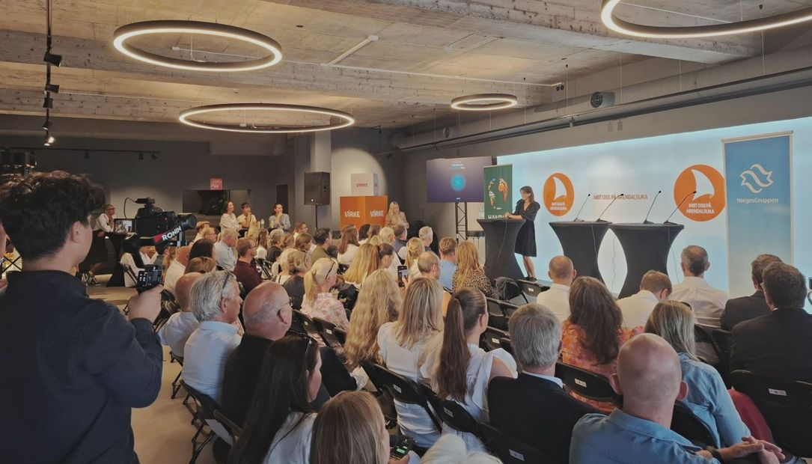
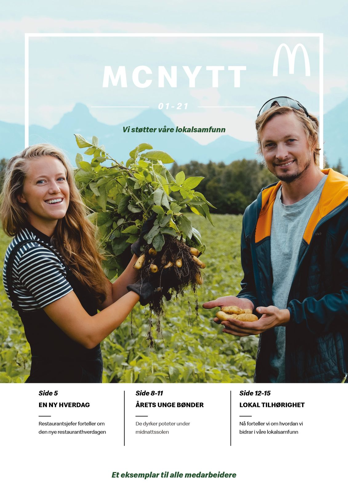
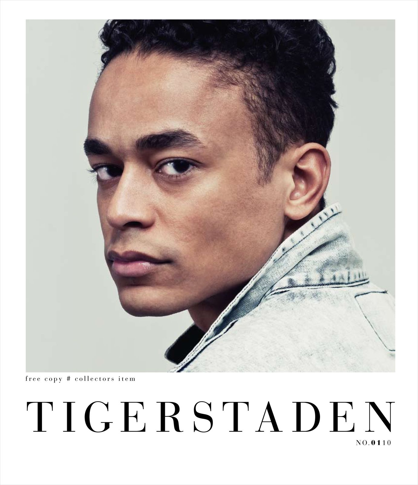

Vi hjelper deg å bli sett.Og forstått.Når du trenger det.Tung kompetanse.Lett å ta i bruk.
SALO er et erfarent PR- og kommunikasjonsmiljø som kombinerer strategisk rådgivning med full gjennomføringsevne. Vi hjelper virksomheter og merkevarer med å ta gode kommunikasjonsvalg, og gjør arbeidet som skal til for å sette disse ut i livet.
PR og kommunikasjon er faget vårt. SALO ble etablert i 2006 og har siden hjulpet norske virksomheter og internasjonale merkevarer med alt fra krevende vurderinger til ferdige leveranser.
Vi holder oss små med vilje. Det gir korte linjer, raske avklaringer og direkte tilgang til erfarne rådgivere, fra første møte til ferdig leveranse.
Rådgivning
Når du trenger et erfarent blikk på muligheter, risiko, budskap, timing og prioriteringer. SALO hjelper deg med å velge hva som bør gjøres, og hva som bør vente.
Se rådgivningstjenestene ↗Synlighet
Når du vil nå ut gjennom fortjent oppmerksomhet, relevante medier, lanseringer og med en klar posisjon. Vi hjelper deg med å identifisere saken, utvikler vinkelen og følger arbeidet hele veien ut.
Se PR og mediearbeid ↗Produksjon
Når kommunikasjonen skal bli til noe som kan publiseres og brukes: artikler, nettsidetekst, foto, film, grafisk design, rapporter, presentasjoner og innholdsproduksjon til egne kanaler.
Se produksjonstjenestene ↗20 års erfaring
SALO har jobbet med PR, medier, innholdsproduksjon, tekst, design og merkevarer siden 2006. Erfaringen gjør at vi enklere ser hva som er vesentlig, raskt setter oss inn i nye saker og sammenhenger, og ikke minst: gir råd som kan brukes, med reell nytteverdi.
Direkte rådgivning
Du jobber med personen som vurderer oppgaven, gir anbefalingen og følger leveransen. Ingen unødvendige mellomledd, og ingen overgang fra salgsrommet til et annet team.
Strategi og gjennomføring
SALO kan bidra hele veien: fra beslutninger skal tas, til arbeidet skal gjøres ferdig etterpå. Det gir bedre sammenheng mellom det virksomheten vil oppnå, budskapet som velges og det som faktisk publiseres.
Fleksibel kapasitet
Bruk oss til et avgrenset prosjekt, en krevende periode eller som en fast kommunikasjonsressurs. Omfanget kan skaleres opp og ned, uten at du må bygge et stort apparat.
Gjennom årene har SALO jobbet for norske virksomheter og globale merkevarer, blant annet Coca-Cola, FINN.no, NorgesGruppen, McDonald’s og Allente.
Oppgavene spenner fra strategisk rådgivning og pressearbeid til innholdsproduksjon, tekst, design og kampanjemateriell.
Se utvalgt arbeid ↗







Bygget rundt to
SALO er bygget rundt Ole Winther, som etablerte byrået i 2006, og Linn Onarheim Winther, som har jobbet sammen med Ole i SALO siden 2009. Ved behov kobler vi på fagfolk vi kjenner godt innen journalistikk, foto, film, design og produksjon. Du beholder den korte veien til dem som kjenner oppgaven – med Ole eller Linn som din faste kontakt.
Les mer om SALO ↗Faglige blikk
I Perspektiver deler vi faglige vurderinger og observasjoner om PR, medier, budskap, innhold, merkevarer og kommunikasjon. Våre perspektiver bygger på erfaring fra virkelige oppdrag og situasjoner. Vi håper disse kan bidra til faglig påfyll for deg som leser dem.
Les Perspektiver ↗01Hva kan et PR- og kommunikasjonsbyrå hjelpe med?+
Et PR- og kommunikasjonsbyrå kan hjelpe med strategiske vurderinger, budskap, pressearbeid, mediehåndtering, innholdsproduksjon, tekst, visuell kommunikasjon og gjennomføring. Hos SALO kan tjenestene brukes hver for seg eller kombineres i ett løp.
02Hva er forskjellen på SALO og et stort kommunikasjonsbyrå?+
Hos SALO jobber du direkte med erfarne rådgivere. Vi holder oss små med vilje, og kobler på relevante spesialister når oppgaven krever det. Det gir korte linjer og et team som er tilpasset behovet, uten et stort fast apparat med ekstra kostnader.
03Kan SALO fungere som en ekstra medarbeider i kommunikasjonsavdelingen?+
Ja. Mange oppdragsgivere bruker SALO som en ekstra ressurs i eget team, enten gjennom en fast retaineravtale eller i perioder med høy belastning, lanseringer eller særskilte kommunikasjonsbehov.
04Hjelper SALO med både strategi og praktisk gjennomføring?+
Ja. SALO kan bidra med vurderinger, plan, budskap og prioritering, og deretter gjennomføre pressearbeid, skrive tekster, produsere innhold eller utvikle visuelt materiell. Kunden kan bruke hele løpet eller bare den delen som trengs.
05Hvor raskt kan SALO sette seg inn i en ny virksomhet?+
Lang erfaring fra ulike virksomheter og bransjer gjør at vi normalt setter oss raskt inn i både organisasjonen, markedet og kommunikasjonsbehovet. Oppstarten tilpasses oppgaven, men målet er at kunden skal få nyttig hjelp allerede fra første møte.
06Jobber SALO med både norske og internasjonale merkevarer?+
Ja. SALO bistår både norske virksomheter og internasjonale merkevarer som trenger en erfaren kommunikasjonsressurs i Norge. Vi har særlig erfaring med å tilpasse budskap, materiell og aktiviteter til det norske markedet.
07Hvor holder SALO til, og hvor tar dere oppdrag?+
SALO er basert i Trondheim, er fast tilgjengelig i Oslo og kan jobbe med kunder over hele landet. Møter og produksjoner gjennomføres fysisk eller digitalt, avhengig av oppgaven og hva som passer kunden best.
08Hva koster det å bruke SALO?+
Prisen avhenger av omfang, tidsbruk og hvilken kompetanse oppgaven krever. SALO jobber både på prosjekt, løpende timebasis og retainer. Før oppstart får kunden et tydelig estimat eller forslag til ramme.
Trenger du et erfarent blikk på en kommunikasjonsutfordring, eller noen som kan få arbeidet ferdig?
Ta kontakt med oss, så finner vi tid for et effektivt arbeidsmøte.
post@salokommunikasjon.no